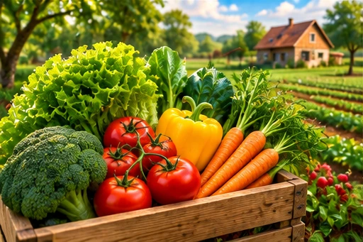
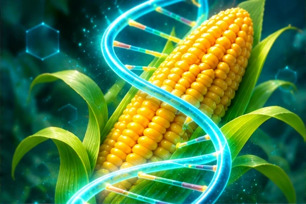
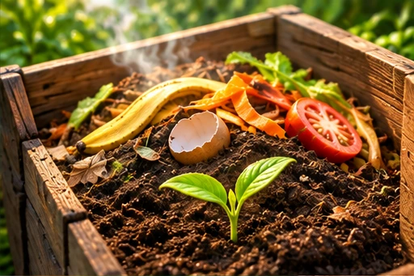
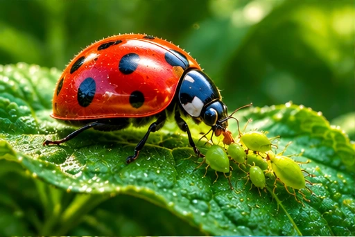

CHOOSE YOUR MISSION · COME TO THE BOARD · PLAY TOGETHER!

Guess the Secret!
Mystery Pictures▶ PLAY
Discover the Word!
Vocabulary Reactor▶ PLAY
Organic or Non-organic?
Sort the Food Science▶ PLAYFood Label Detective!
Find the Real Clues▶ PLAY